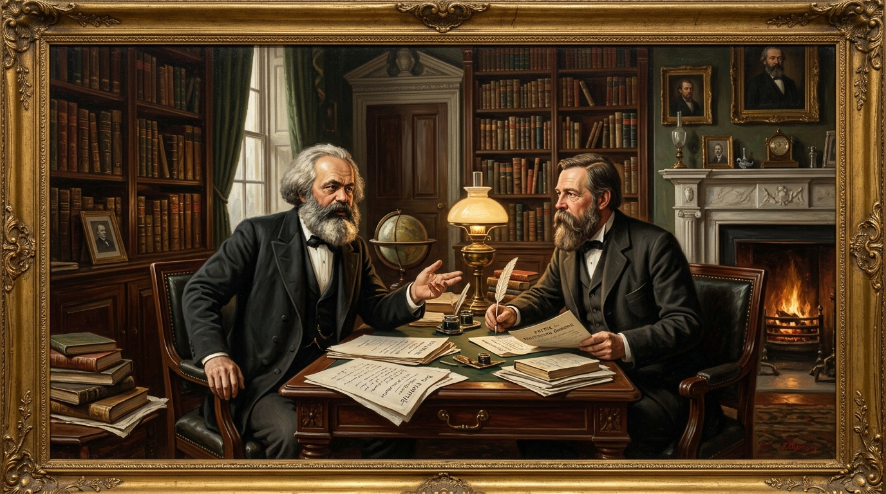

Từ Antoine de Montchretien đến C. Mác: Hành trình khoa học khám phá các quy luật kinh tế

Nguồn: Giáo trình Triết học & Kinh tế chính trị Mác - Lênin 2021 (Tr. 8 - 32)"Kinh tế chính trị học, theo nghĩa rộng nhất, là khoa học về những quy luật chi phối sự sản xuất và sự trao đổi những tư liệu sinh hoạt vật chất trong xã hội loài người." — Ph. Ăngghen, Chống Đuy-rinh
Kinh tế chính trị không phải là một tập hợp các công thức khô khan, mà là kết quả của một quá trình đấu tranh tư tưởng và nghiên cứu khoa học bền bỉ suốt hơn bốn thế kỷ. Thuật ngữ này xuất hiện lần đầu tiên vào năm 1615 trong tác phẩm nổi tiếng Traité d'économie politique của nhà kinh tế người Pháp Antoine de Montchretien, đánh dấu khoảnh khắc tư duy loài người chuyển từ quan sát kinh tế gia đình (oikonomia thời cổ đại) sang nghiên cứu quy mô toàn bộ nền kinh tế quốc gia.
1. Chủ nghĩa Trọng thương: Cái nôi sơ khai nghiên cứu lưu thông
Hình thành từ thế kỷ XV đến thế kỷ XVII ở Tây Âu trong bối cảnh các phát kiến địa lý mở rộng giao thương hàng hải, trường phái Trọng thương (Mercantilism) với các đại diện như Thomas Mun, William Stafford coi tiền tệ (vàng, bạc) là của cải duy nhất của một quốc gia. Tuy nhiên, họ mắc sai lầm căn bản khi cho rằng nguồn gốc của sự giàu có nảy sinh thuần túy từ lĩnh vực lưu thông và ngoại thương (mua rẻ, bán đắt).
2. Chủ nghĩa Trọng nông & Bước ngoặt của Kinh tế chính trị Cổ điển Anh
Bước sang thế kỷ XVIII, trường phái Trọng nông ở Pháp (tiêu biểu là François Quesnay) đã tạo bước đột phá khi chuyển trọng tâm nghiên cứu từ lưu thông sang sản xuất, dù họ vẫn phiến diện coi nông nghiệp là ngành duy nhất tạo ra của cải.
Chỉ đến khi Kinh tế chính trị Cổ điển Anh ra đời với William Petty, Adam Smith và David Ricardo, khoa học kinh tế mới thực sự hoàn thiện hệ thống phạm trù nền móng. Adam Smith trong kiệt tác The Wealth of Nations (1776) và David Ricardo đã chứng minh một cách xuất sắc rằng: chính lao động của con người nói chung, chứ không phải đất đai hay thương nghiệp, mới là nguồn gốc tạo nên giá trị của mọi hàng hóa.
3. Cuộc cách mạng lý luận của C. Mác và V.I. Lênin
Kế thừa có chọn lọc các hạt nhân hợp lý của kinh tế chính trị cổ điển Anh, Các Mác đã giải quyết triệt để những bế tắc mà Adam Smith và Ricardo chưa thể lý giải:
- Phát hiện tính hai mặt của lao động sản xuất: Phân biệt rành mạch giữa lao động cụ thể (tạo giá trị sử dụng) và lao động trừu tượng (tạo giá trị).
- Khám phá bí mật Giá trị thặng dư: Phân tích hàng hóa sức lao động, vạch trần cơ chế bóc lột lao động làm thuê mà chủ nghĩa tư bản luôn che đậy.
- Phương pháp Trừu tượng hóa khoa học: Gạt bỏ lớp vỏ bọc ngẫu nhiên bên ngoài để khái quát các quy luật kinh tế khách quan chi phối sự vận động của xã hội.
lightbulb Ý nghĩa đối với người học hôm nay
Hiểu rõ lịch sử phát triển của môn học giúp sinh viên xây dựng tư duy phản biện khoa học: nhìn nhận các biến động kinh tế đương đại (như khủng hoảng tài chính, lạm phát số, xung đột chuỗi cung ứng) không phải như những hiện tượng ngẫu nhiên, mà là kết quả tất yếu của các quy luật sản xuất và trao đổi khách quan.